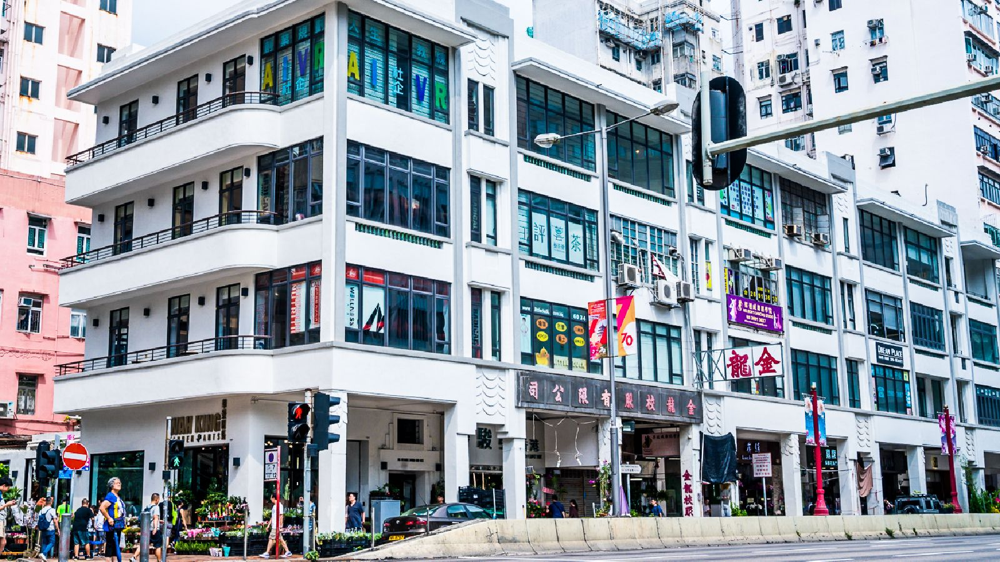
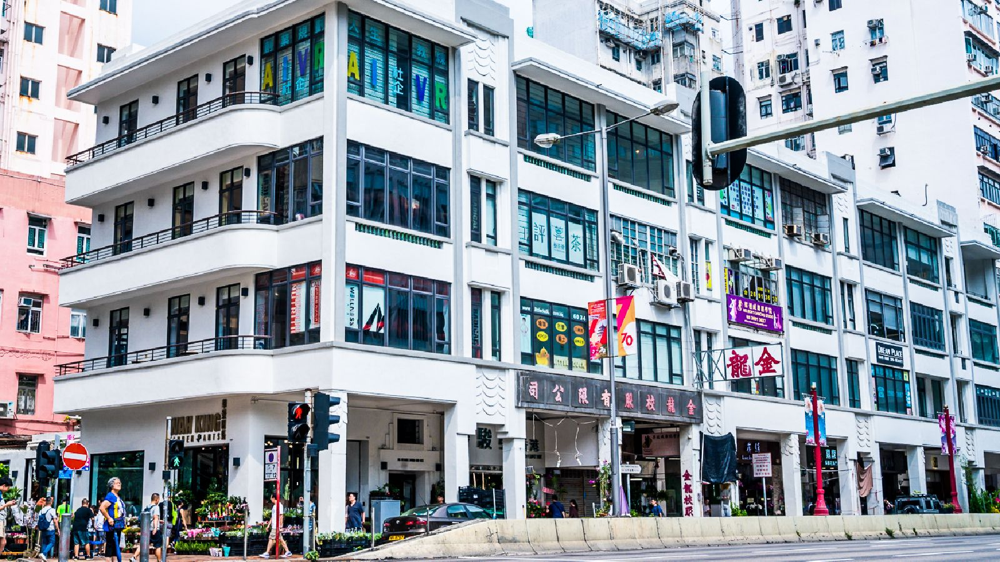

在地文化


 

大坑火龍騰空起舞 百年習俗歡慶中秋
香舞火龍習俗始於19世紀末，當時大坑村爆發瘟疫，村民於是紮起一條插滿香支的草龍，在晚上繞村舞龍，以求消災。
端午節傳統習俗：龍舟比賽
端午節賽龍舟的習俗已流傳過千年，是源自嶺南一帶的傳統，而龍舟划過的水又稱「大吉水」，寓意吉祥。不過，現代龍舟競賽運動實際上源於40多年前的香港。1976年，第一場國際龍舟競賽於香港舉行，來自日本長崎的隊伍受邀與9支本地隊伍同場競渡，從此奠定龍舟運動國際化及標準化的基礎，近年更發展成全球健兒雲集的香港國際龍舟邀請賽。
唐樓的百年演變
1850年代，在如今的太平山街一帶，逐漸興起了一座座唐樓。」 位於中環威靈頓街120號的一棟唐樓建於1880年代，共三層高，是香港現有最早的唐樓之一，並於2017年被定為香港一級歷史建築。在1920年代，人們開始運用鋼筋混凝土，灣仔石水渠街的多幢唐樓就是如此建成。而到了1930年代，裝飾藝術風格的設計將唐樓點綴得更為典雅。李博士介紹，該時期最美的唐樓位於九龍，分別在太子道西和荔枝角道119號的雷生春堂——這些唐樓帶有典型店家的圓柱門廊（如今已成為唐樓的經典特色之一），其底層為零售空間，店前的人行道帶有遮蔽，能擋雨防曬，樓上則供住宿。 其後的幾十年裡，唐樓建得越來越高，直到它們在1950年代末開始「失寵」。這是因為「當時很多開發商不斷呼籲政府允許他們建造更高大的建築，」李博士解釋道。然而，在過去十年裡，香港湧現出了愈來愈多的保育項目，致力於保護、修善這些建築瑰寶，讓它們重新並獲得關注。